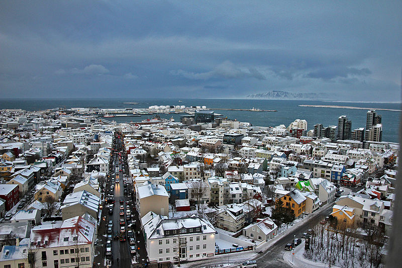

General information
Reykjavík is the capital and largest city of Iceland. It is located in southwestern Iceland. Also, it is believed to be the first permanent settlement in this country. he city was officially founded in 1786 as a trading town and grew steadily over the following decades, as it transformed into a regional and later national centre of commerce, population, and governmental activities. It is among the cleanest, greenest, and safest cities in the world.
